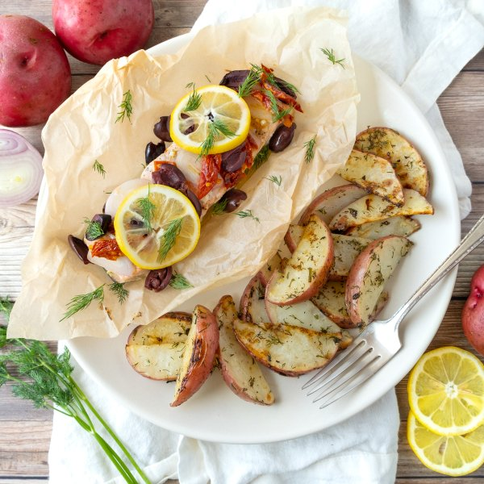

Baked Mediterranean Salmon Parcels with Lemon-Dill Roasted Potatoes

Prep Time
40 min
Nutrition (per serving)
630.3 kcalCalories
43.8 gProtein
57.5 gCarbs
25.5 gFat
Full nutrition table
| Calories | 630.3 kcal |
| Total fat | 25.5 g |
| Saturated fat | 3.7 g |
| Trans fat | 0 g |
| Cholesterol | 76.5 mg |
| Sodium | 446.7 mg |
| Carbohydrates | 57.5 g |
| Fiber | 6.4 g |
| Sugars | 6.4 g |
| Protein | 43.8 g |
| Potassium | 2279.3 mg |
| Calcium | 119.6 mg |
| Iron | 4.1 mg |
| Vitamin A | 796.6 IU |
| Vitamin C | 51.6 mg |
| Vitamin D | 614.1 IU |
Cookware
Ingredients
- 1 small bunchfresh dill
- 2 clovesgarlic
- ½ cupKalamata olives, pitted
- 2lemons
- 6 mediumred potatoes
- 1 ½ lbsalmon fillet
- 1shallot
- 8sun-dried tomatoes, oil-packed
- black pepper
- extra virgin olive oil
- salt
Steps
- Preheat oven to 425°F. Position racks in the upper and lower thirds of the oven.
- Wash and dry the fresh produce.6 medium red potatoes
2 lemons
1 small bunch fresh dill - Cut each potato lengthwise into 10-12 thin wedges, then transfer to a large baking sheet pan. Drizzle with oil and season with salt and pepper.2 tbsp extra virgin olive oil
½ tsp salt
½ tsp black pepper - Juice one of the lemons over the potatoes. Slice remaining lemon into thin rounds and set aside.
- Using a knife, shave the dill leaves off the stems; discard the stems and mince the leaves. Sprinkle half of the dill over the potatoes and toss to coat (set remaining dill aside for garnish).
- Place the potatoes on the lower rack of the oven (it doesn't have to be fully heated) and bake, tossing halfway through, until fork-tender, 20-25 minutes.
- Meanwhile, place four 12-inch x 12-inch squares of parchment, side by side, on a flat surface with a corner pointing up (in a diamond shape). If counter space is limited, you can overlap parchment corners by 3-4 inches, leaving a space in the center for each fish fillet.
- Pat the fish dry with paper towels, then place one fillet, skin-side down, on top of each parchment square. Drizzle with oil and season with salt and pepper.1 ½ lb salmon fillet
2 tsp extra virgin olive oil
¼ tsp salt
¼ tsp black pepper - Peel and mince garlic, then sprinkle over each fillet.2 cloves garlic
- Peel and thinly slice shallot; lay over each fillet.1 shallot
- Halve the olives lengthwise. Thinly slice sun-dried tomatoes. Sprinkle both over each fillet.½ cup Kalamata olives, pitted
8 sun-dried tomatoes, oil-packed - Layer lemon slices over each fillet. Loosely pull the top and bottom corners of each piece of parchment towards the center, then roll and fold towards the center to seal. Loosely tuck the opposite sides of the parchment underneath each fillet; transfer fish parcels to another baking sheet pan.
- Reduce oven to 400°F. Place fish on the upper rack of the oven and bake until opaque and easily flakes with a fork, 12-15 minutes.
- To serve, divide fish parcels and potatoes between plates. Open the parcels, garnish with reserved dill, and enjoy!